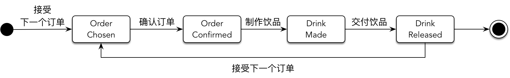
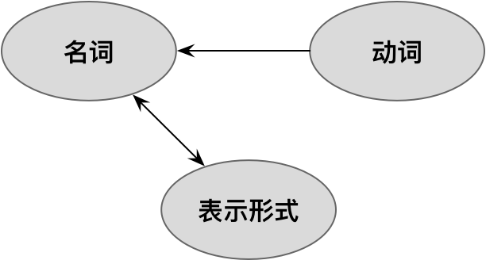
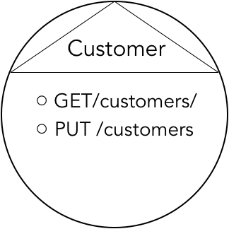

- 001 「战略篇」访谈 DDD 和微服务是什么关系？.md
- 002 「战略篇」开篇词：领域驱动设计，重焕青春的设计经典.md
- 003 领域驱动设计概览.md
- 004 深入分析软件的复杂度.md
- 005 控制软件复杂度的原则.md
- 006 领域驱动设计对软件复杂度的应对（上）.md
- 007 领域驱动设计对软件复杂度的应对（下）.md
- 008 软件开发团队的沟通与协作.md
- 009 运用领域场景分析提炼领域知识（上）.md
- 010 运用领域场景分析提炼领域知识（下）.md
- 011 建立统一语言.md
- 012 理解限界上下文.md
- 013 限界上下文的控制力（上）.md
- 014 限界上下文的控制力（下）.md
- 015 识别限界上下文（上）.md
- 016 识别限界上下文（下）.md
- 017 理解上下文映射.md
- 018 上下文映射的团队协作模式.md
- 019 上下文映射的通信集成模式.md
- 020 辨别限界上下文的协作关系（上）.md
- 021 辨别限界上下文的协作关系（下）.md
- 022 认识分层架构.md
- 023 分层架构的演化.md
- 024 领域驱动架构的演进.md
- 025 案例 层次的职责与协作关系（图文篇）.md
- 026 限界上下文与架构.md
- 027 限界上下文对架构的影响.md
- 028 领域驱动设计的代码模型.md
- 029 代码模型的架构决策.md
- 030 实践 先启阶段的需求分析.md
- 031 实践 先启阶段的领域场景分析（上）.md
- 032 实践 先启阶段的领域场景分析（下）.md
- 033 实践 识别限界上下文.md
- 034 实践 确定限界上下文的协作关系.md
- 035 实践 EAS 的整体架构.md
- 036 「战术篇」访谈：DDD 能帮开发团队提高设计水平吗？.md
- 037 「战术篇」开篇词：领域驱动设计的不确定性.md
- 038 什么是模型.md
- 039 数据分析模型.md
- 040 数据设计模型.md
- 041 数据模型与对象模型.md
- 042 数据实现模型.md
- 043 案例 培训管理系统.md
- 044 服务资源模型.md
- 045 服务行为模型.md
- 046 服务设计模型.md
- 047 领域模型驱动设计.md
- 048 领域实现模型.md
- 049 理解领域模型.md
- 050 领域模型与结构范式.md
- 051 领域模型与对象范式（上）.md
- 052 领域模型与对象范式（中）.md
- 053 领域模型与对象范式（下）.md
- 054 领域模型与函数范式.md
- 055 领域驱动分层架构与对象模型.md
- 056 统一语言与领域分析模型.md
- 057 精炼领域分析模型.md
- 058 彩色 UML 与彩色建模.md
- 059 四色建模法.md
- 060 案例 订单核心流程的四色建模.md
- 061 事件风暴与业务全景探索.md
- 062 事件风暴与领域分析建模.md
- 063 案例 订单核心流程的事件风暴.md
- 064 表达领域设计模型.md
- 065 实体.md
- 066 值对象.md
- 067 对象图与聚合.md
- 068 聚合设计原则.md
- 069 聚合之间的关系.md
- 070 聚合的设计过程.md
- 071 案例 培训领域模型的聚合设计.md
- 072 领域模型对象的生命周期-工厂.md
- 073 领域模型对象的生命周期-资源库.md
- 074 领域服务.md
- 075 案例 领域设计模型的价值.md
- 076 应用服务.md
- 077 场景的设计驱动力.md
- 078 案例 薪资管理系统的场景驱动设计.md
- 079 场景驱动设计与 DCI 模式.md
- 080 领域事件.md
- 081 发布者—订阅者模式.md
- 082 事件溯源模式.md
- 083 测试优先的领域实现建模.md
- 084 深入理解简单设计.md
- 085 案例 薪资管理系统的测试驱动开发（上）.md
- 086 案例 薪资管理系统的测试驱动开发（下）.md
- 087 对象关系映射（上）.md
- 088 对象关系映射（下）.md
- 089 领域模型与数据模型.md
- 090 领域驱动设计对持久化的影响.md
- 091 领域驱动设计体系.md
- 092 子领域与限界上下文.md
- 093 限界上下文的边界与协作.md
- 094 限界上下文之间的分布式通信.md
- 095 命令查询职责分离.md
- 096 分布式柔性事务.md
- 097 设计概念的统一语言.md
- 098 模型对象.md
- 099 领域驱动设计参考过程模型.md
- 100 领域驱动设计的精髓.md
- 101 实践 员工上下文的领域建模.md
- 102 实践 考勤上下文的领域建模.md
- 103 实践 项目上下文的领域建模.md
- 104 实践 培训上下文的业务需求.md
- 105 实践 培训上下文的领域分析建模.md
- 106 实践 培训上下文的领域设计建模.md
- 107 实践 培训上下文的领域实现建模.md
- 108 实践 EAS 系统的代码模型.md
- 109 后记：如何学习领域驱动设计.md
044 服务资源模型
在软件领域中，使用最频繁的词语之一就是“服务”。在领域驱动设计中，也有领域服务、应用服务之分。通常，一个对象被命名为服务，意味着它具有为客户提供某种业务行为的能力。服务与客户存在一种协作关系，协作的接口可以称之为“契约（Contract）”。
我们在这里探讨服务模型，指的是面向当前应用外部客户的远程服务，在分层架构中，属于扮演了“北向网关”角色的基础设施层。由于客户位于当前应用之外，意味着通信模式需要采用分布式通信，传递的对象也需要视通信协议与框架而选择支持序列化和反序列化的对象协议，如 XML、JSON 或 ProtocolBuffer 等。远程服务的消费者包括所有需要发起跨进程调用的前端 UI、下游服务或其他第三方消费者。因此，服务模型驱动设计实际上是以外部远程服务为建模视角进行的设计过程。
如果说数据模型驱动设计是自下而上的设计过程，那么服务模型驱动设计则可以认为是自上而下，或者自外而内，即需要站在外部消费者的角度去思考服务的设计。
服务分析模型
当我们从服务视角建立服务分析模型时，有两种不同的设计思想。一种思想是将服务视为一种资源，即 REST 架构风格的设计模式。通过这种方式获得的资源对象，一般认为是基础设施层“北向网关”的内容，通常被定义为资源（Resource）类或控制器（Controller）类，命名方式为 <Model>+Resource 或 <Model>+Controller。关于资源与控制器的差异，我会在后面讲解分层架构与对象模型之间的关系时详细阐述。采用这种设计思想建立的服务分析模型可以称之为“服务资源模型”。
服务模型驱动设计的另一种设计思想是将服务视为一种行为，体现了客户端与远程服务之间的行为协作。分析时，首先想到的不是服务，而是客户端需要什么样的操作，然后将该操作转换为职责，服务就是职责的履行者。从角色看，服务是一种行为能力的提供者（Provider），而调用服务的客户端就是消费者（Consumer）。消费者与提供者之间协作的关键在于如何确定消费请求，从而确定对应的服务契约，因而可以称这种服务分析模型为“服务行为模型”。
服务资源模型
REST（REpresentational State Transfer，表述性状态迁移）架构风格起源于 Web 的架构体系，在这个架构体系中，URI 和资源扮演了主要的角色。《REST 实战》认为 REST 服务设计的关键是从资源的角度思考服务设计。书中写道：
资源是基于 Web 系统的基础构建块，在某种程度上，Web 经常被称作是“面向资源的”。一个资源可以是我们暴露给 Web 的任何东西，从一个文档或视频片段，到一个业务过程或设备。从消费者的观点看，资源可以是消费者能够与之交互以达成某种目标的任何东西。
采用面向资源的架构设计思想，意味着服务模型驱动设计要从识别资源开始。首先要确认客户访问的资源是什么？这种面向资源的设计思想可以认为是对建模的一种约束。有时候，通过服务行为识别出资源对象是顺理成章之事，例如查询我的订单，那么 Order 就是客户要访问的资源。有时候，需求描述是面向行为的，例如执行一次统计分析，我们会习惯于从行为的角度去分析，例如将服务建模为 AnalysisService；但在 REST 架构风格的语境中，更应该识别出资源对象：执行一次统计分析，就是创建一个分析结果，由此获得资源对象 AnalysisResult。
REST 更丰富的内涵还体现在“HATEOAS（Hypermedia As The Engine Of Application State），超媒体作为应用状态的引擎”，它才是 REST 架构风格的核心原则。基于 HATEOAS，客户端与服务器端的交互其实代表的是一种状态的迁移。服务和客户端之间交换的并非应用的状态，而是资源状态的表述，这个表述通过链接指向下一个迁移的应用状态，链接的值就是另一个资源的 URI。例如当订单（Order）资源被成功创建后，假设订单的订单号为 1111，那么返回的资源表述中，就应该包含支付（Payment）资源的 URI，即 http://practiceddd.com/payments/orders/1111。
一个内嵌了链接的资源就是一个超媒体（Hypermedia），通过它可以改变应用的状态，这正是 HATEOAS 的含义。显然，HATEOAS 可以通过应用状态的迁移来表达一个业务流程。由于超媒体内部封装了状态迁移的规则，客户在访问资源时并不知道这些规则，使得客户和服务之间能够形成松散耦合的服务协议。因此，当我们基于 REST 架构风格对服务建模时，建立的服务模型应包含资源以及超媒体，如下图所示：

既然 REST 的核心思想将“超媒体作为应用状态的引擎”，因而在面向资源进行分析建模时，需要重点把握业务流程中资源状态的变化。状态的变更是针对资源的一个操作（Action）触发的，在满足某个业务规则之后，当前资源就会因为状态变更而链接到另外一个资源。为了体现资源状态的变化，以及资源与操作及链接资源之间的关系，我们可以针对业务流程绘制状态机。
以咖啡店为例，我们可以梳理出分别以顾客和咖啡师为视角的业务流程。顾客在选定了饮品之后，首先会点单和付款。在点单到付款之间，顾客还可以修改订单。顾客付款成功之后，订单就被确认，顾客会等待直到获得咖啡师制作的饮品。当顾客获取饮品后，当前订单就算完成：

咖啡师的业务流程是一个循环流程，他（她）会不断地接受下一个订单，然后在收取费用之后开始制作饮品，最后将制作好的饮品交到顾客手中：

状态机里的每一个状态迁移，都代表着与 Web 资源的一次交互。每一次迁移，都是用户针对资源的操作触发的。因此，利用状态图中的状态与触发状态迁移的操作可以帮助我们驱动出资源的定义。例如下订单操作与 OrderPlaced 状态可以驱动出 Orders 资源，付款操作与 Paid 状态可以驱动出 Payments 资源，制作饮品操作和 DrinkMade 状态可以驱动出 Drinks 资源：

仅仅识别出资源并不足以建立服务资源模型，因为建立服务资源模型的最终目的是设计 REST 服务。一个 REST 服务实际上是对客户端与资源之间交互协作的抽象，它利用了关注点分离原则分离了资源、访问资源的动作及表示资源的形式：

资源作为名词，是“到一组实体的概念上的映射”，动词是在资源上执行的动作，而表示形式则用来“捕获资源的当前或预期的状态，并在组件之间传递这种表示形式”。乍一看，动词正好体现了作用在资源之上的访问行为，那就代表了业务概念的一种业务行为；但是，REST 架构风格为了保证客户端与服务器端之间的松散耦合，对这样的访问动词提炼了统一的接口。这正是 Roy Fielding 推导 REST 风格时的一种架构约束。在那篇著名的论文《架构风格与基于网络的软件架构设计》中，他写道：
使 REST 架构风格区别于其他基于网络的架构风格的核心特征是，它强调组件之间要有一个统一的接口。通过在组件接口上应用通用性的软件工程原则，整体的系统架构得到了简化，交互的可见性也得到了改善。实现与它们所提供的服务是解耦的，这促进了独立的可进化性。然而，付出的代价是，统一接口降低了效率，因为信息都使用标准化的形式来转移，而不能使用特定于应用的需求的形式。
为了满足“统一接口”的约束，REST 采用标准的 HTTP 协议语义来描述客户端和服务器端的交互，即 GET、POST、PUT、DELETE、PATCH、HEAD、OPTION、TRACE 八种不同类型的 HTTP 动词。在这些 HTTP 动词中，POST、PUT、DELETE 与 PATCH 对资源的操作都会导致资源状态的迁移；而 GET、HEAD、OPTION 和 TRACE 用于查看资源的当前状态，并不会引起状态迁移。例如，在前面所述的咖啡店案例中，下订单操作采用的是 POST 动词，订单状态从初始状态迁移到 OrderPlaced，修改订单操作采用的是 PUT 动词，它使订单状态从 OrderPlaced 迁移到 OrderUpdated；而查询订单状态、查询饮品等操作采用的是 GET 动词，由于它不会引起状态迁移，因而不曾在状态机中体现。
由于要遵循统一接口的架构约束，使得服务资源模型与服务行为模型之间的最大区别除了服务的建模思想不同之外，还在于对服务行为的认识。服务资源模型认为所有针对资源进行操作的服务行为都是统一的，这就抹去了服务的业务语义。如果要区分不同的服务行为，就需要结合 HTTP 动词、由资源组成的 URI 及请求和响应信息来共同分辨，如此才能将客户端的请求路由到正确的服务行为上。
假设服务 A 与服务 B 的 URI 皆为 https://cafe.org/orders/，但如果服务 A 的 HTTP 动词是 GET，服务 B 的 HTTP 动词是 POST，就能区分出两个不同的服务行为：查询所有订单与创建订单。又假设服务 C 与服务 D 的 URI 皆为 https://cafe.org/orders/12345，且 HTTP 动词皆为 PUT，这时仅靠 URI 和 HTTP 动词就无法分辨服务，需要再结合服务的客户端请求或响应。例如服务 C 是更新订单，它的请求定义是：
{
"additions": "shot",
"cost": 28.00
}
服务 D 是确认订单，它的请求定义是：
{
"status": "Confirmed"
}
客户端请求的定义差异可以说明这是两个完全不同的服务，使得在对请求进行路由时可以正确地完成对资源的操作，但由于请求自身缺乏业务语义，因此并不能直观体现该服务代表的行为到底是什么。因此，这些信息或许足以支持服务的路由，却不足以说明服务 API。
对于一个 REST 服务而言，设计服务的 API 自有其规矩，例如微软定义了《REST API 指南》，就规定了状态码的正确使用、URL 的结构、HTTP 动词的选择规范、请求头（Request Header）的定义、响应头（Response Header）的定义、请求与响应的格式、JSON 标准与服务版本管理等内容。Swagger 也定义了《OpenAPI 规格说明书》，对 API 的各个组成部分给出了设计约束。同时，Swagger 还提供了 SwaggerHub 工具管理 API，下图就是一个 REST 服务 API 的管理页面（来自 Swagger 默认创建的 Demo）：

通过以上文档可以看到 REST 服务为“添加库存项（adds an inventory item）”，HTTP 动词为 POST，URI 为 /inventory，客户端请求的协议则被定义在 components 的schemas中：
schemas:
InventoryItem:
type: object
required:
- id
- name
- manufacturer
- releaseDate
properties:
id:
type: string
format: uuid
example: d290f1ee-6c54-4b01-90e6-d701748f0851
name:
type: string
example: Widget Adapter
releaseDate:
type: string
format: date-time
example: '2016-08-29T09:12:33.001Z'
manufacturer:
$ref: '#/components/schemas/Manufacturer'
Manufacturer:
required:
- name
properties:
name:
type: string
example: ACME Corporation
homePage:
type: string
format: url
example: 'https://www.acme-corp.com'
phone:
type: string
example: 408-867-5309
type: object
这个 Schema 定义了请求消息中各个属性的类型、结构、必备性和格式等，图的右下角还提供了对应请求的一个样例：
{
"id": "d290f1ee-6c54-4b01-90e6-d701748f0851",
"name": "Widget Adapter",
"releaseDate": "2016-08-29T09:12:33.001Z",
"manufacturer": {
"name": "ACME Corporation",
"homePage": "https://www.acme-corp.com",
"phone": "408-867-5309"
}
}
服务端响应的定义规定了三种不同场景返回的状态码，即成功创建时返回 201，请求无效返回 400，库存项已经存在返回 409：
responses:
'201':
description: item created
'400':
description: 'invalid input, object invalid'
'409':
description: an existing item already exists
我通常将组成 REST 服务 API 的请求和响应都认为是消息对象。请求消息分为命令消息和查询消息。命令消息往往伴随着 POST、PUT、DELETE 与 PATCH 动词，这些操作往往是不安全的，会对资源产生副作用。此外，PUT 与 DELETE 动词是幂等的，即一次或多次执行该操作产生的结果是一致的。查询消息常常使用 GET 动词，对应的操作是安全的，也是幂等的。由于 URI 也可以包含请求参数，有的查询操作并不需要定义额外的请求消息。
如果请求为命令操作，由于它会导致资源状态的迁移，因此在对应的响应消息中还需要定义链接，以指向下一个迁移的应用状态。倘若请求为查询操作，返回的响应消息还将包含查询结果。不管是命令操作，还是查询操作，返回的响应消息都应该包含标准的 HTTP 状态码。状态码（Status Code）的使用必须正确，要符合状态码的语义，例如 200 和 201 都是操作成功，但后者意味着资源的创建成功。
我们也可以利用可视化的方式来表现服务资源模型。Thomas Erl 等人的著作《SOA 与 REST》建议使用圆形代表服务，而用包含了三角形标记的圆形代表 REST 服务资源，如：

可视化的三角形标记表示该服务遵循了 REST 风格的设计约束，模型中包含了服务 API 的主要构成：资源、HTTP 动词与 URI。若需建立直观的服务资源模型，可以考虑采用这样的建模形式。
REST 服务的设计属于 REST 服务规范的一部分，但对于服务模型驱动设计而言，更关注由服务资源开始由外向内的设计驱动力，即将远程服务作为设计的起点，逐步从接口到实现向内层层推进。因此，在服务模型驱动设计过程中，需要明确在接口内部的实现中需要哪些对象进行协作，以支持远程服务提供给客户端的功能。这一设计过程与服务模型的类型无关，无论是服务资源模型还是后面要讲的服务行为模型，设计的驱动力都是完全一样的，都属于服务设计模型的一部分。